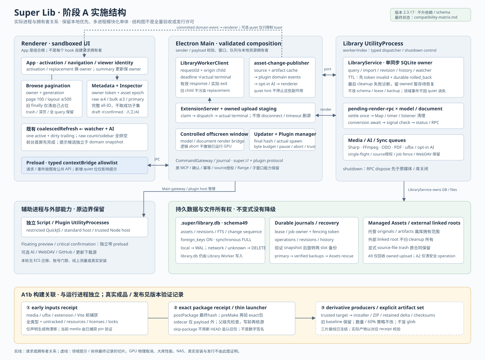

实施与证据
局部 PASS 只代表命令覆盖的范围。JSON 断言绿不代替实际 exit 0；性能百分比、真实 GPU / NAS 和安装发布没有从结构图推导。
这份离线索引补充已实施的请求拥有者、后台刷新、文件终态和构建来源链。原架构快照不被覆盖；结构图不代替源冻结、真实命令退出状态、UI 验收或发行许可。

局部 PASS 只代表命令覆盖的范围。JSON 断言绿不代替实际 exit 0；性能百分比、真实 GPU / NAS 和安装发布没有从结构图推导。
取消 consumer 不提前释放原始请求槽；通知静音不停止 cache、插件和 opt-in AI。外部 linked root 不变成 cleanup 所有物。
新 inventory 必须在所有源码写者 freeze 后生成。工具拒绝覆盖既有输出；旧清点的统计与 SHA 不能冒充当前源码未变。
图中 Main/Worker 边表示实际 bridge，不是模块互相任意调用。静态相对 import 清点不包含 SQL / IPC / package imports；完整功能、权限和恢复策略仍以源码和限定测试证据为准。